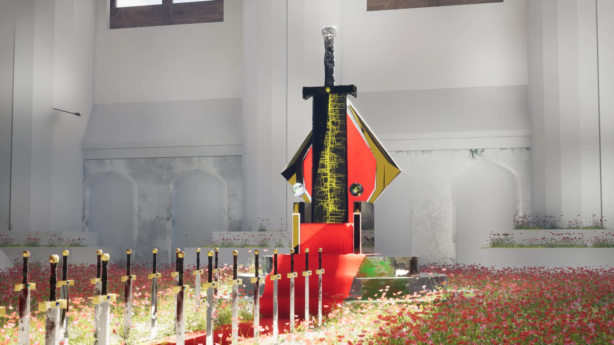

01 / The throne
Power left
behind.
The focal asset combines the throne, its raised base, a pair of orbs and a red carpet. The king’s sword pierces the seat, turning the symbol of authority into a refusal to let another ruler take his place.
